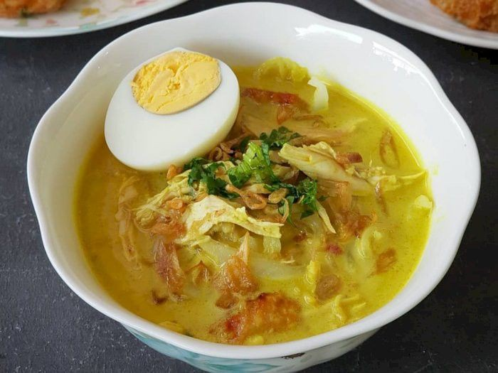

Soto Ayam Kuning

Soto Ayam Kuning
Kuah soto ayam yang gurih dengan warna kuning khas kunyit ini selalu jadi pilihan hangat untuk makan siang atau malam.
Bahan-bahan:
- 1 ekor ayam (potong kecil)
- 2 liter air
- 4 siung bawang putih
- 6 butir bawang merah
- 1 ruas kunyit (bakar)
- 2 batang serai (memarkan)
- 3 lembar daun jeruk
- Garam, merica, dan kaldu ayam secukupnya
Cara Membuat:
- Rebus ayam dalam 2 liter air hingga setengah matang. Angkat ayam dan goreng sebentar hingga kulitnya kecokelatan. Sisihkan.
- Haluskan bawang putih, bawang merah, dan kunyit. Tumis dengan sedikit minyak hingga harum. Tambahkan serai dan daun jeruk, lalu aduk sebentar.
- Tuang bumbu tumis ke air rebusan ayam, aduk hingga merata.
- Kembalikan potongan ayam ke dalam kuah. Tambahkan garam, merica, dan kaldu ayam secukupnya. Rebus dengan api kecil hingga ayam empuk dan kuah beraroma harum.
- Hidangkan soto dengan nasi putih, tauge, bihun, dan pelengkap seperti telur rebus, jeruk nipis, dan sambal.
Tips:
Gunakan api kecil agar rempah lebih meresap ke dalam kuah dan daging ayam.